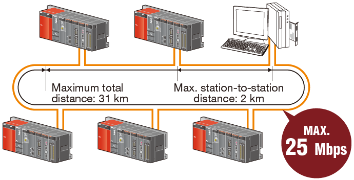
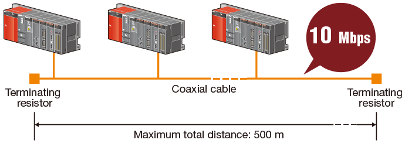
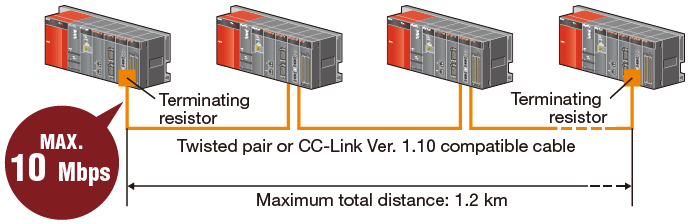

Controllers MELSEC-Q Series
Product features -Network-

MELSECNET/H network
MELSECNET/H network module
- Optical loop type
- Coaxial bus type
- Twisted bus type
- MELSECNET/H network systems support controller-to-controller, controller-to-personal computer, and controller-to-remote I/O station communications. Multiple wiring types are available and many functions designed to increase reliability are included, such as support for redundant systems.
- Optical loop type: Communication speeds up to 25 Mbps. Fiber optic cable is immune to EMI/RFI noise. Up to 2 km between stations using GI type cable.
- Coaxial bus type: Using low cost coaxial cable allows networks to be constructed at less cost than optical loop networks.
- Twisted bus type: The combination of an affordable network module and twisted-pair cables allows a network system to be built at very low cost.
[Optical loop system]

[Coaxial bus system]

[Twisted bus system]

■ Performance Specifications
| Item | Specification | |||||
|---|---|---|---|---|---|---|
| Network configurations | Optical loop system | Coaxial bus system | ||||
| Model | QJ71LP21(S)-25 QJ72LP25-25 |
QJ71LP21G QJ72LP25G |
QJ71BR11 QJ72BR15 |
|||
| Cable | Fiber optic (SI) | Fiber optic (GI) | Coaxial (3C-2V) | Coaxial (5C-2V) | ||
| PLC to PLC network | Maximum number of link points per network |
LB | 16384 points (8192 points in the MELSECNET/10 mode) | |||
| LW | 16384 points (8192 points in the MELSECNET/10 mode) | |||||
| LX/LY | 8192 points | |||||
| Maximum number of link points per station |
|
|||||
| Number of stations per network | Up to 64 stations (1 control station, 63 normal stations) |
Up to 32 stations (1 control station, 31 normal stations) |
||||
| Remote I/O network | Maximum number of link points per network |
LB | 16384 points (Remote Master to Remote Sub-master or Remote I/O: 8192 points, Remote Sub-master or Remote I/O to Remote Master: 8192 points) |
|||
| LW | 16384 points (Remote Master to Remote Sub-master or Remote I/O: 8192 points, Remote Sub-master or Remote I/O to Remote Master: 8192 points) |
|||||
| LX/LY | 8192 points | |||||
| Maximum number of link points per station |
|
|||||
| Maximum I/O points per remote I/O station |
X + Y ≤ 4096 points If X/Y numbers are duplicated, only one side is taken into consideration. |
|||||
| Device points per remote I/O station |
M | 8192 points | ||||
| SM | 2048 points | |||||
| D | 12288 points | |||||
| SD | 2048 points | |||||
| Number of stations per network | Up to 65 stations (1 remote master station, 64 remote I/O stations) |
Up to 33 stations (1 remote master station, 32 remote I/O stations) |
||||
| Communication speed | 25 Mbps/10 Mbps | 10 Mbps | ||||
| Overall distance | 30 km | 300 m | 500 m | |||
| Distance between stations | Up to 1 km | 2 km | — | |||
| Item | Specification | |||
|---|---|---|---|---|
| Network configurations | Twisted bus system | |||
| Model | QJ71NT11B | |||
| Cable | Twisted pair | CC-Link Ver. 1.10-compatible cable | ||
| PLC to PLC network | Maximum number of link points per network |
LB | 16384 points | |
| LW | 16384 points | |||
| LX/LY | 8192 points | |||
| Maximum number of link points per station |
|
|||
| Number of stations per network | Up to 32 stations (1 control station, 31 normal stations) | |||
| Communication speed | 156 kbps/312 kbps/625 kbps/1.25 Mbps/2.5 Mbps/5 Mbps/10 Mbps | |||
| Overall distance | 1200 m/156 kbps, 600 m/312 kbps, 400 m/625 kbps, 200 m/1.25 Mbps |
1200 m/156 kbps, 900 m/312 kbps, 600 m/625 kbps, 400 m/1.25 Mbps, 200 m/2.5 Mbps, 150 m/5 Mbps, 100 m/10 Mbps |
||